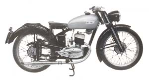
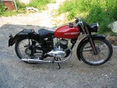

| |
 Cliccare sulle immagini per ingrandirle |
|

MOTORE: Monocilindrico 2 tempi, alesaggio e corsa 52 x 58 mm
Cilindrata effettiva 123 cc, potenza effettiva 4,75 CV a 4800 giri, rapporto di compressione 1÷6
Velocità massima 80 km/h
Carburatore Dell'Orto MA 16
Accensione a dinamo-spinterogeno
Cambio a 3 rapporti, trasmissione primaria e secondaria a catena
Frizione in bagno d'olio a dischi multipli
TELAIO A culla singola
Forcella anteriore a parallelogramma in lamiera stampata con ammortizzatore al centro e frenasterzo
Sospensione posteriore a ruota guidata
Cerchio anteriore: 2" x 19" Cerchio posteriore: 2" x 19"
(N.B. La larghezza interna del canale è 1.5")
Capacità serbatoio 12 litri
Potenza impianto elettrico 35÷45 W con batteria 6V 8Ah
Consumo norme CUNA 2,38 litri/100 km
Candela Marelli ----
 |
 |
 |